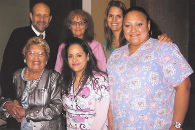

Patient Experiences
Over the years, Dr. Hyman has received patient letters, cards and emails regarding his highly qualified care and his amazing staff, who have been with him for many years. Here is a sampling of these patient experiences.
Sharon
Great staff! Everyone was very considerate and thoughtful plus the office and rooms are immaculate, refreshing to say the least. Thank you all for making it so easy! "
Leona
The examination process is distressing to me, yet you and your staff were tremendously patient and informative. When I left your office I was more at ease than when I entered. You and your staff have been the most thorough and polite group of medical personnel that I have ever encountered – and I’ve seen many over the years. Thank you for your kindness."
Disney Executive
Thank you for the very comprehensive executive physical. It was truly the most exhaustive exam I’ve ever had and I’m so glad I did it. Your counsel was helpful as well. Now I can stay on top of my game."
Dave
I have never been put through such a complete and comprehensive medical examination. I was impressed with the cleanliness of the facility and the equipment that was used to monitor my condition. I left the office feeling very confident that no stone was left unturned. I was very impressed with the professionalism of the staff and their genuine concern for my health. I want to highly recommend Dr. Hyman and his staff to anyone who suffers from hypertension-related illnesses."
Robert
Thanks to your whole wonderful team for your encouraging care and cordiality."
Robert
We all really appreciate the attitude and integrity you bring to your practice. Your qualities have always been superior, but I am not really good at expressing it on the spot. Thanks."
Joe
Doctor Hyman and his staff are very professional and had a genuine concern for my health issues. He was knowledgeable and very thorough. The service was prompt without unnecessary delay. I appreciate his service and excellent exam."
Bernadine
We appreciate your thoughtfulness and professional care."
Cassandra
I so much appreciated the kindness of your entire staff who were so sensitive and considerate when they realized I was in extreme pain as a result of recent back surgery. Your staff’s gently touch and assistance made me feel cared for."
Thelma
Thanks to you and your staff. The treatment I received was better than any I have had. May God bless."
Sarah
It was a pleasure meeting your team. All of you were very friendly and professional."
Pamela
You are one of the few doctors I’ve met who really care about the patients. People like you really make a difference."
Lloyd
I greatly appreciated the personal attention you bestowed upon me. Your standard of patient care, including your compassionate follow through brings me back to my childhood when my personal physician took a true interest in my health. You set the bar for excellence."
Nikki
My experience at Dr. Hyman’s office has been very positive and enjoyable. Dr. Hyman is gentle, thorough and very kind. His staff is very kind, sweet and helpful from the start – even on the phone. They explained clearly what was happening and made the experience unusually pleasant"
Abe
I traveled 60 miles in rush hour traffic not looking forward to my visit. When I arrived I was pleasantly and professionally greeted by your staff. The comfort and welcome continued with every person I met. I wish to express my thanks appreciation to you and your staff."
Doug
I was impressed with the professionalism of the doctor and staff and the speed of all the treatments."
George
I really appreciate how Dr. Hyman answers all of my questions so clearly and how I understand when he explains things to me. Thanks for being so clear. I am happy you are my doctor."
L.E.
I want you to know how very much your gentle, highly professional treatment of my mother meant to me. Thanks to your examinations she way back in the pink."
Paul
I want to thank you for your professional and caring care. My numbers are the best they’ve been in 20 years thanks to you."
Gloria
It has been a long time since I have felt so secure and comfortable with my medical care. Thank you for the generosity of time, your careful consideration of the implication of the medical data, your helpful medical staff and the whole aura you and your staff engender."
R.R.
It’s been two years since I’ve had any alcohol to drink and I am still taking the medicine you prescribed for me for cholesterol. I feel great. You have done a heck of a job with me. Thank you!"
Becca
I am grateful that you have taken on my mother as your patient. I have been quite concerned for many years about the lack of caring response and involvement from her doctors and lack of coordination between doctors. At one point she had a stroke and didn’t get a call back from her doctor for over a week. You have surpassed all of our hopes and dreams in what we wanted for mother. I can not tell you how important this is or how much it means to our family. We appreciate having her medical care in your hands."
Brian
GO BACK UPI want you to know that my dad always appreciated the care you provided to both him and my mom. Dad considered himself an insightful critic of medical practitioners and he often said that you were a real medical scholar. He admired you as a doctor and valued your care."